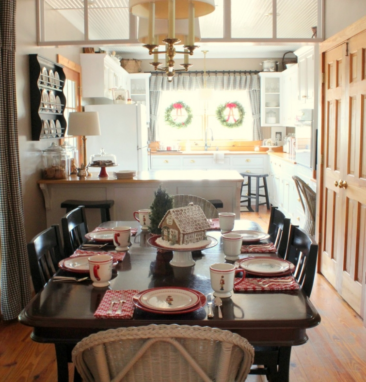
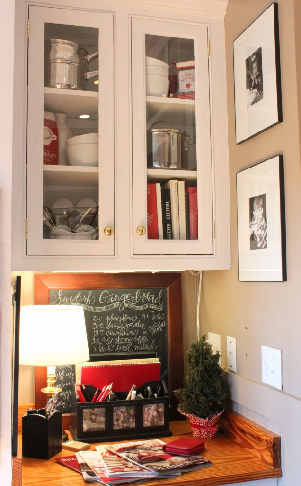

.png)
.PNG)
.PNG)
.PNG)
.PNG)
.PNG)
.JPG)
.JPG)
.PNG)
.PNG)


One of the best parts of the Christmas holidays to me is all of the delicious desserts that seem to appear in everyone’s homes. But I think I may have gone a little overboard on the …um …sweets here in our kitchen…like we are going to be on a sugar high for awhile now! In the past week, I have baked seven dozen cookies, Swedish gingerbread, a pan of brownies, and decorated a couple of gingerbread houses. My son had to be cautioned to not gobble all of it up at least until I got my photographs done for this post. Then my oldest showed up today, and I knew it was a lost cause! So I scurried around with my camera to get some pictures. The cookie jars below were almost full at one point…hmm.

Here is the desk with the recipe handy for the Swedish gingerbread.
You can get a little better look here.

I traded out all the yellow cookbooks for red ones, and Christmas cards now fill the basket by the stove.

On the other side of the cookbooks is one of the gingerbread houses I’ve worked on. Now remember, in my last post you promised you would not laugh at my novice attempts at these. So I am holding you to that promise when I show them to you!

Here is the window with its double wreaths. This photo just does not do its Christmas cheer justice. On my computer monitor, the bows keep looking pink to me, but they are most certainly red.
On the other side of the window is a tray set up and ready to make hot cocoa in my Christmas mugs. I have been through some Christmas china! When we were first married I had the Cuthbertson Christmas tree. Then I sold it and purchased Lenox Winter Greetings. I sold it too, and it was replaced by the Spode Christmas Tree pattern. A few years after that, I got the bright idea that I did not need a “pattern” – only solid red dishes. That worked very well for many years, but last year I fell in love with a discontinued Williams Sonoma pattern – Christmas Icons.

I became real good friends with Ebay last year. 🙂 I went on practically every auction they had for plates, mugs, a platter, and spoons in the pattern. The only thing I still need are their “tiny tapers” in it. Last week, I was able to get some more of the mugs there. The beauty of the pattern is that it is really an assortment of 4 patterns – which lends itself to going in several decorating directions. Obviously this year, my “direction” (if you can call it that) is the gingerbread man (which isn’t visible in this photo.) I can see the nutcracker being another great take off point in the future.

And on the other side of that is the counter with the coffee tray . I have a new coffee maker! It is the “prettiest” one I have ever seen (if you can call a coffee maker pretty.) Our old one takes 45 minutes (no exaggeration here) to make a pot of 10 cups, so I am thrilled to get one that brews it much faster.


On top of the refrigerator is a gingerbread “house” cake in a jar and the platter in my Christmas pattern.

Sweets again. The cereal that normally lives in the cookie jars has to go live in the pantry like the other boring food at Christmas. Cookies get the place of honor there now. You can see a few of the plates from the Christmas pattern up in the plate rack…

and more by the brownies there in the cake stand.
(Where in the world are my gingerbread man plates??)

Last year, I made these gingerbread houses and just left them stored in the jars in the island cabinet. Obviously, they are not edible, but it sure saved a lot of time this year. These are my most “beginner” looking ones. I think I have improved a little with the ones made this year. 
Here is another closer look at them. (But don’t look too closely – they really aren’t very good.)
And now our little tour is at the table set for Christmas. 
It is obviously not a formal table, but our entertaining is not formal either. A casual table suits us much better.

Here is the cabinet in the dining room all done up for Christmas.
I bought these gingerbread men “naked” 🙂 at Fresh Market.
Then my daughter and I had fun “dressing” them.
She decided to make one of them a gingerbread “girl”.
That’s the one that got eaten! 
And here are the guys in the jar.
And that concludes our tour of the sweets in the kitchen for this Christmas…and now the boys can begin devouring all the cookies and brownies! Just a reminder that the giveaway for the Christmas books, Thymes candle, and a little surprise is still going on. Details here.
Just leave a comment on any of the Christmas Traditions posts (or on all of them if you’d like more chances to win!) and you will be entered for the drawing. And let me just say…your comments on the last two posts have blown me away! They have been WONDERFUL, and I have enjoyed reading them so very much. From your stories of how books have touched your lives (you all must be great readers!) to creating gingerbread houses with your grandchildren. I can’t thank you enough for sharing your tales here.
Today’s question is more of a practical one. My biggest decorating roadblock every year is trying to come up with a centerpiece for the Christmas table setting. I don’t know why this gives me such a challenge, but it does. So my question for you today is one to help give me some ideas (although I do like the gingerbread house this year.) So please comment.
What do you use for your Christmas table centerpiece?
Merry Christmas!
**Giveaway has closed.**
Linking up to these fine parties:

The Inspired Room and Cottage Magpie are both hosting. Welcome to readers visiting from there!


.PNG)
I have a Waterford Crystal bowl filled with gold Christmas ornaments and I have a large cloche over it. The whole thing rests on a round marble slab.
[…] Talk of the House […]
Simplemente es hermoso la decoración espectacular y sencillo para pasar un ambiente navideño en casa..
The spectacular and simple decor is simply beautiful to share Christmas atmosphere at home…
Wow! What a wonderful flair for decorating you have, Kelly! All of the details of your Christmas-y kitchen and dining room work together to make a charming, lovely space.
I visited this post when you linked to Melissa’s Christmas home tour (and was wowed!), but I was soooo hurried, I didn’t take the time to make a comment. So here I am again, admiring, and now I think I’ll go and take a look through some of your other posts…
I also think I’ll follow you…
Oh my. I just found your blog through the home tour party and… SWOON. I am in love. We are in the middle of working on our house, and one of our projects is putting paneling on many walls and adding vintage doors to replace the hollow-core doors, but I was going to go with white trim… but I just looove the wood trim in your house! I may have to copy you. Super cute Christmas decorations, too!! Nice to find you! 🙂
~Angela~
——————————————————————–
Angela – Thank you so much!! And thank you to you and Melissa for hosting the great Christmas linky party this year! I can’t tell you how much I appreciate it. How funny that you like the natural wood trim. I have thought so much about painting it white, but I don’t because the real wood doors were an extra expense we went to when we built the house, and it would be kind of crazy to paint them. (And I would want to paint them too if I painted the trim.) How smart of you to replace your doors with vintage doors. That will make such a big difference. I am thinking of replacing our hardware with vintage hardware on the doors. I am glad you liked the Christmas decorations This house is easy to decorate for the season since I use so much red here. (Easter is a challenge!:))
Kelly
i love your black/white/red color scheme … and your Christmas kitchen is FABULOUS … hope there’s lots of making merry in there!
[…] when I ran across this post at Talk of the House I knew I wanted to share with you what Kelly did with these jars for […]
Your house is amazing! I’m so glad I stumbled onto your blog! I found it on fb from the hooked on houses page 🙂 For my centerpiece this year, I found a long narrow wooden crate that I painted red and stained with dark brown on the outside and just stained on the inside – the old wood warmed beautifully! Then I lined 4 large mason jars in it with tea lights in between, and arranged several boughs from our Christmas tree and stuck in some sprigs of gold curly picks. Simple and pretty 🙂 Thanks for the tour!
Looking at the beautiful way you decorated for the holidays I noticed right away many familiar things, especially the Christmas mugs and plates. You see I work at our local Williams-Sonoma store. I especially loved the idea of displaying red cookbooks for the holidays. Love your post and look forward to reading it regularly. Thanks to Julie from “Hooked on Houses” for introducing me to you, Kelly. Have a Merry Christmas, Lindy
Your Christmas kitchen is so very charming! And your gingerbread houses are fabulous too!
Your Christmas decorating is one of the best I’ve seen! Love it all! (And the gingerbread houses are very cute…..I don’t see anything wrong with them!)
Visiting from the Inspired Room. Your house looks great! I especially love the wreaths in the kitchen window.
Hi Kelly,
I love your home. I have pinned it as “the perfect kitchen”. It is just as cozy as can be. Have a Merry Christmas!
Sherry
your kitchen is so pretty and cozy- i love all your christmas dishes and your kitchen cabinets!
Beautiful! Just beautiful! The gingerbread houses in the jars is such a fabulous idea and I also love the house on the cake pedestal, too.
I have missed checking in with you lately – family stuff and an unexpected trip out west put me be-hiiind at school and home, but I made darn sure the house was decorated before I left! For my kitchen centerpiece I have used a pretty red and white striped bowl with a painted topiary Christmas tree inside (obviously TOO pretty to put food in, so it’s a decorative bowl now) along with my Waechtersbach red S&P shakers and an old PB tall box-woodish type tree that I slipped in a couple little Swedish elves in with some red and white striped candles. A piccture probably would be better than this description! Look forward to spending more time getting ready for Christmas with you.
I have been struggling with what to use as a centerpiece this year as we are having an “It’s a Wonderful Life” dinner party on Saturday. I finally decided yesterday to use a milk glass bowl, silver tray, candles and greenery. I think it will look pretty!
I just looked at the centerpiece on my dining room table and it was boring. But, on my kitchen island is the Pottery Barn Santa candle in a lantern with snow underneath….just like in the outlet. On each side of the lantern is a smaller glass container with a tree candle, snow underneath. I bought those candles (unopened in the box) at Goodwill last year after Christmas.
Love the hot cocoa station! Kitchen looks beautiful.
It all looks so beautiful! Merry Christmas!
Your houses are just right. I will have to try this as I wanted a white one-no candy. Your centerpiece is lovely as it is.
I’ve been thinking about those jars holding the gingerbread houses – are they the Heritage Hill ones from Crate & Barrel? I mainly want to know so I can find similar sizes. I am SO inspired from a couple of blogs (yours & others) and decorating in some new ways this year. Wish I had it all done, however :o)
the picture of the sink area with the wreaths in the windows reminds me of the furnace in “home alone” … i was always impressed with the gingerbread houses you made. of course, i’ve had to go on a 4-week crash-atkins diet to offset the appetite increases that these recent meds have given me, so christmas sweets are off the table.
Kelly, you have my full admiration! You teach full time and pull off a gorgeous Christmas at the same time. I love it! Your gingerbread men and houses are adorable. Your home looks fantastic and I know you and your family must enjoy it.
Love the books you’ve chosen to give away. I am having a give away too. Come by if you have a chance.
It’s always a good day when I check your website and there is a new post! I love your china. I have a set of Cuthbertson that my mom started for me years and years ago. While I love it, something new would be fun…hence, my attempt to buy some of the red yuletide pattern at World Market. It was half price from 10-2:00( I think that is right) today but I live an hour from the store and had too many other Christmas errands to tend to, to make a trip to Asheville. Merry Christmas! I hope the next post will show your Christmas tree! Katrina
Oh Kelly! I adore your house, but especially at Christmas time! So cozy, I feel like I can smell all the baked yumminess just looking at the photos! Loved this post!!!!
xo, Tessa
Hi Kelly! First of all you take great pictures….I am very curious what subject you teach?? You are very creative, you do amazing lettering with your writing, and you are a beautiful decorator! I would love to come over and have you teach me on all these things! Fun 🙂 Your gingerbread houses are so great. You have given me an idea. I have young children still so I’m thinking of having a day of doing these houses and putting them on cakestands for display! I have wanted to do them, but wasn’t sure where to put them for display. I have been looking for a silver tray like you have so that I can make a coffee bar. Haven’t found one yet, but I also think a hot cocoa bar would be cute too. I am looking forward to seeing pictures of your new coffee maker! My husband and I are big coffee drinkers so I’m excited for you to get your new coffee maker! You mentioned that others had shared stories of different books they had. Over the years we have obtained a collection of Christmas books for our kids. One of our favorites is “A Wish to be a Christmas Tree”. It was written by a local author and his wife did the illustrations. It’s fun to bring them out each year and read them over and over up through Christmas. I also have some Christmas cookbooks that I obtained from our local library bookfair each for only $1, so I am having fun looking through those this month as well. We love books around here. Thanks for sharing! Merry Christmas!
Thank you for sharing your beautiful ideas. Love the gingerbread houses in the jars.
What a wonderful & festive post ~ I enjoyed every photo!!
I change my centerpiece on my table almost every year (some of my Christmas decor stays the same – so this is a fun place to mix things up a bit!). One year I used our “gingerbread train” that we made from a kit purchased at Target. My son had so much fun decorating it & was so proud that it earned “high visibility” display space! Instead of a cake stand, I flipped a tray upside down so the bottom was “elevated” & it gave added height. I sprinkled Peppermint Snow (purchased from the William-Sonoma Outlet) everywhere & we added some wrapped candy in the freight cars.
This year… I’m keeping it simple with a lantern holding a pretty candle nestled on top of a tray.
I’m planning to visit our Fresh Market tomorrow to see if they have those adorable gingerbread men (fingers crossed!). Thanks for sharing them!
Oh my! Gingerbread houses in jars. How clever. Love it!
The house on the cake stand makes a perfect centerpiece.
A sweet homemade nativity that my daughter made
when she was 4 adorns our table from day to day. On a special
occasion when the table it set I would place a rustic box that my hubby made from reclaimed wood and fill it with fresh greens and vintage ornaments. White votives in clear glass jars scattered around it.
Since I love red, a beautiful holiday table centerpiece that I use is a wide, low poinsettia arrangement with 3 candles. I loved your Swedish gingerbread recipe. Delicious! I say the more sweets at Christmas the better!
My all time favorite Christmas centerpiece includes a special wooden dough bowl, filled with a large pillar candle surrounded by fresh oranges, apples, and fresh cedar and pine cut from the yard. Sprinkle with a few acorns, unhulled pecans or walnuts. It smells great, looks great and can be easily picked up and relocated if a family card or board game is on the agenda later in the day.
Oh, I love your Christmas kitchen. We make gingerbread houses too, but I’ve never thought of putting one in a jar! Love it! I also want to make a hot cocoa station….hot cocoa is a BIG thing around here.
You asked about Christmas centerpieces…and here it what I usually do. I turn my footed cake plate over and put the dome upside down, to form a bowl. Then I put a festive candle in the middle and pour in red and white balls, beaded garland, greenery, etc around the candle. Then on each side of my ‘Christmas bowl’ I put my tapered candles and Christmas salt/pepper shakers. My kitchen is red/white, so I usually put my red/white checked cloth and Christmas place mats on the table too. Easy peasy, but I like it!
Thanks for sharing–you’ve given me tons of ideas!
Blessings,
Amy
Kelly,
Thanks for sharing all of the great photos of your Christmas decorations and sweets! I love it all. For my table center piece I always load a cake plate/stand with the different varities of sweets I have made and put a glass dome over it and set it on the table. It serves two purposes, decoration and easy access to the treats! I can’t wait to see what else you have done decorating wise…whats in the game room? Are there Christmas movie titles on the chalk board in there? It is green, white and black instead of red and white? I love all the green in there!
I Love the way you decorated the gingerbread houses. especially the roofs, I thought the last photo with books was just that, but a giveaway wow! keeping my fingers crossed. One of our favorite traditions is bringing out all the christmas books. I have a friend who gave me a couple…The Christmas Note by Donna Van Liere and Unwrapping Christmas by Lori Copeland- Great Books! I am so happy to read them over each christmas. I hope whoever wins your books also starts this tradition. House Looks Great!
Thank You for your postings. I must admit I get sad when I don’t see a new posting, only because I really enjoy looking at your home. It appears that you love family and home very much. IO just love the way you took liitle gingerbread houses and put snow in jar and placed them in there. You are a very creative person. Have a good weekend!
BTW, I’ve only just put away Autumn this week – ack! I’ve done a bit of cleaning, very little decorating but hope to get it done this weekend despite a church Women’s Christmas Brunch on Saturday and a friend’s open house on Sunday. I’ve got gifts to buy but what I really want to do is bake cookies. Soon. . .
Kelly, those gingerbread houses in jars are adorable! And I totally get your Christmas china love and wanting to change them once in while. I’ve had Spode Christmas Tree, handpainted snowmen plates that I made, and presently Lenox Holiday Gatherings Berry. But I found myself looking at new patterns this year 🙂 I also am getting ready for a new set of flatware. It would be the 3rd one, each time I’ve chosen a simpler pattern than the one before. Thank you for sharing your beautiful home!
Enjoyed this post so much. Your home looks so cozy and festive.
Thanks for your email. I know your daughters’ entertainment centered around ” The Year of the Perfect Tree” was enjoyed by all.
Kelly,
Oh, where to begin. First, I was so excited to see your gingerbread houses, they gave me some ideas for the gingerbread house-decorating party I’m attending next week. You’ve done such a great job. Second, its so nice to know another dishaholic. 🙂 I have Spoke Christmas Tree dishes but it’s all I can do to stop myself from buying another pattern. I collect Nutcrackers so the idea of nutcracker mugs and plates holds great appeal. As far as a centerpiece. I love the gingerbread house on the footed cake plate…it looks great. I purchased a bronze reindeer many years ago in Aspen and I have a florist secure him in a spray of greens for our dining room table each year. It’s secured in florist foam so I keep it moist and it lasts all month.
Lovely post. I cracked up at your boys chowing down on the goodies! Reminded me of when our kids were home.
xo,
Karen
As usual, a wonderful post! I just don’t know how you find the time, especially teaching full time. You amaze me!
Our centerpiece is a glass nativity I received years ago with my grandmother’s silver candlesticks on either side.
YOUR TOO CRITICAL OF YOURSELF, YOUR GINGERBREAD HOUSES ARE GREAT.
THE CHARACTER OF THEM IS WHAT MAKES THEM SO GREAT
I just love looking at your photos..just beautiful. The house, as expected, looks wonderful. I love all the gingerbread houses in the glass jars, another great idea.
Kelly, you blow me away!
I KNOW how busy teachers are at all times of the year let alone Christmas… and look at what you do beyond your day job. Amaaaaaazing! I love your house and what you do with it!
I am still in the midst of decorating our house. Just gathered the evergreen boughs for the pots on the front porch and the window boxes on the shed. In the midst of setting out my Christmas village/woodland scenes on the mantlepiece and sideboard… and this weekend we put up our lights and the wreaths that I hang on the verandah railings and the front door.
For my table centrepiece I always use a 6 taper candle centrepiece… the 6 inch white tapers are in simple silver holders that climb in a spiral with bits of greenery on the base. This was my Mom’s centrepiece and it was always my duty as oldest daughter and first to drive to go out and buy the 6 inch tapers each year. This little job seemed to take so long as I would get distracted by all the pretty things in the shops… I still seem to have this problem! 🙂 Although now it’s one of my Christmas traditions!
Take care
Cathy
I love how you decorated your kitchen and dining room. 🙂 Your gingerbread houses are so cute. I love how you put a couple on cake pedestals. I have been making a gingerbread house for three years and I love them. I haven’t made mine this year yet though. Seems like I always struggle to know how to decorate my dining room table too. I usually use fresh greenery, votive candles and ornaments and/or pine cones. I’ve been sprinkling a little fake snow in too. 🙂
I would have never thought of putting the gingerbread houses in the jars. I love that look! My table centerpiece each year is a glass bowl holding a bunch of beautiful beaded ornaments handmade by my mom, who is no longer with us. Reminds me of her and looks pretty every year. Merry Christmas to you!
Your post today is so pretty. It has made me want to go into the kitchen, bake some cookies and trim my kitchen windows just like you did. Thank you so much for sharing. Kathy
Kelly, your home is GORGEOUS. I was drooling over these photos — and I don’t just mean the gingerbread ones – LOL. SO, SO pretty! Thanks for sharing them with us, and have a Merry Christmas!
Hi Kelly, Usually I struggle with my table centerpiece too. This year I splurged on a group of 6 preserved boxwood topiaries that I have like a mini forest. They are sitting on top of a red striped grain sack runner. Not fancy but certainly the right colors for Christmas. Your home is so lovely! Those wreaths in the windows are perfect. The gingerbread houses in the jars are such a good idea. Happy Holidays!
So very pretty and really good ideas that I will copy!
I love your home…gingerbread houses are cute..great idea to preserve them to reuse each year. Would love to win giveaway! Thanks
Kelly, your gingerbread houses and men are just wonderful. I am sitting here laughing and thinking back to all of the gingerbread houses my children and I tried to make over the years. They tried so hard to decorate them and succeed at making a winner. Each year however one or another of them would get a bit too heavy handed, smashing the candies onto them and the whole thing would crash. What else to do at that point but to make cocoa and eat the results. Ha!
I have a small collection of animated Santa music boxes and I enjoy putting one of them on the table and placing Christmas greenery and decorations around it for the center piece on our dinning table.
Well, I do love the gingerbread house on the table. I don’t believe I have seen that used before and its different. I’m having a hard time this year with my centerpiece too. I have so many old, neat things but usually go with my doughbowl. I’ve seen the candles in the old jars that would be pretty. I’m trying to do something different this year and just have to settle down and figure it out. Maybe this weekend ☺
I love your Christmas kitchen……….so festive and colorful.
We have a HUGE Christmas Village, 31 buildings, a train, ,dozens and dozens of people and accessories, plus a working train. We sold our large family home and until retirement we are living in a much smaller house. With the children not coming to our house this year we decided to set the village up on our dining room table. It is 4 ft wide and 10 feet long. In the years we have the village set up everything else is minimal. It is great fun to have. It takes the entire Thanksgiving weekend plus some to complete it.
You and your home are so inviting, I love being able to peek inside, I drive by some homes and you can just tell from the outside warm or cold. The warm ones you want to come in for coffee and have a short visit. I so enjoy your post thank you Jane
Please, please, please come and decorate my house! I love yours!!
Merry, merry!
Karen
Love all your Christmas decor. Cute gingerbread men. Great idea buying made already and just dressing them. I just went to Fresh Market and should have bought some.
I am using a vintage tool box down the center of my breakfast room table filled with burlap and ornaments.